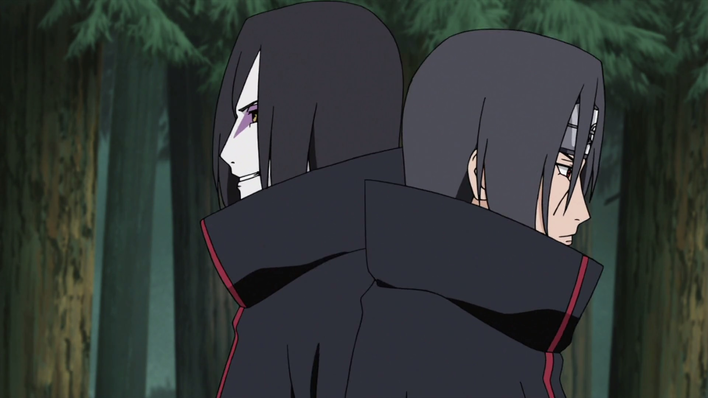
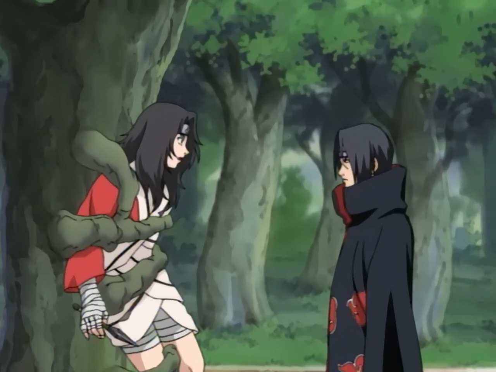
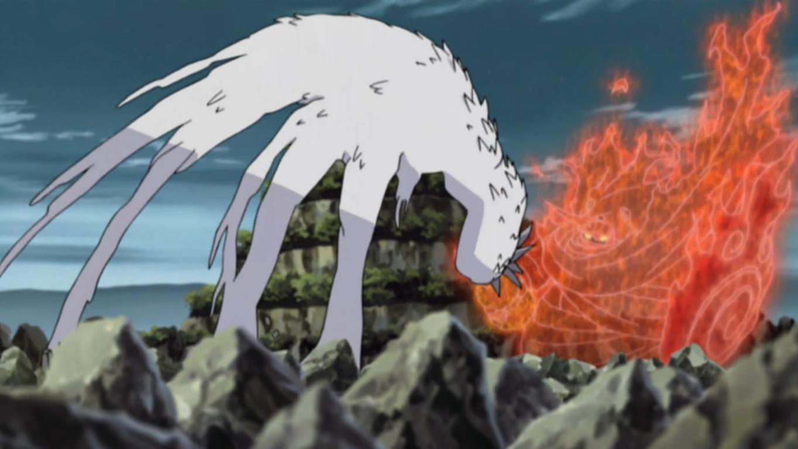
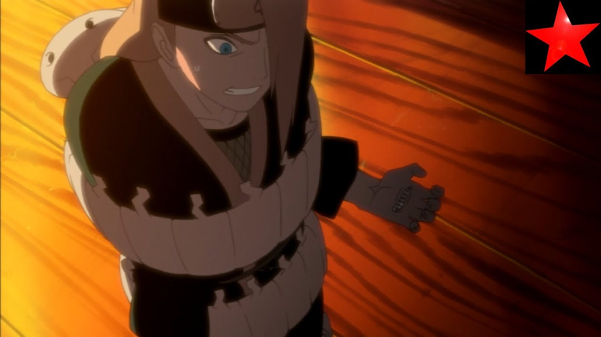
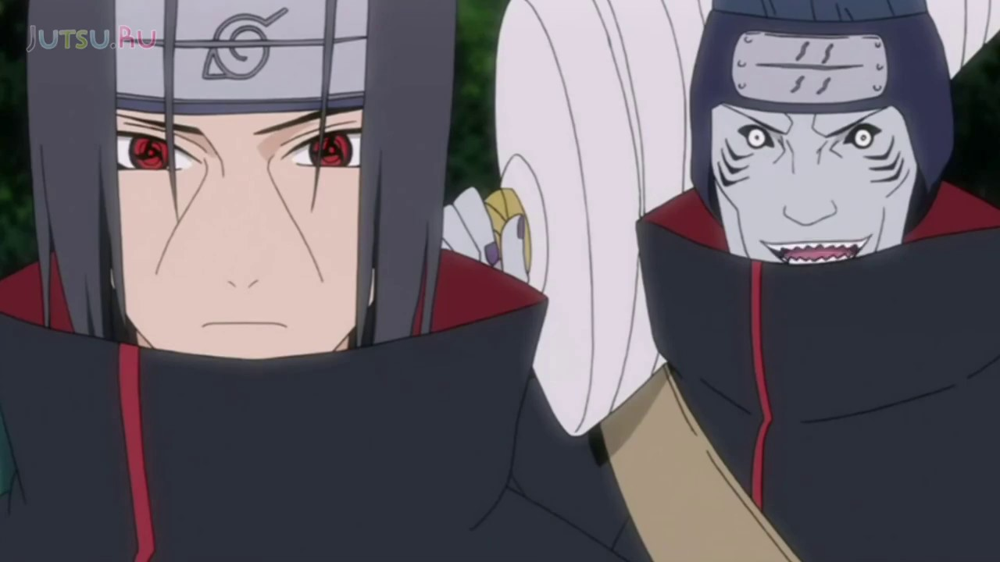
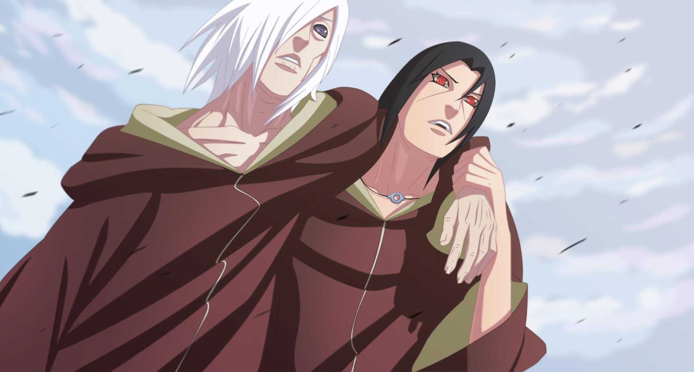
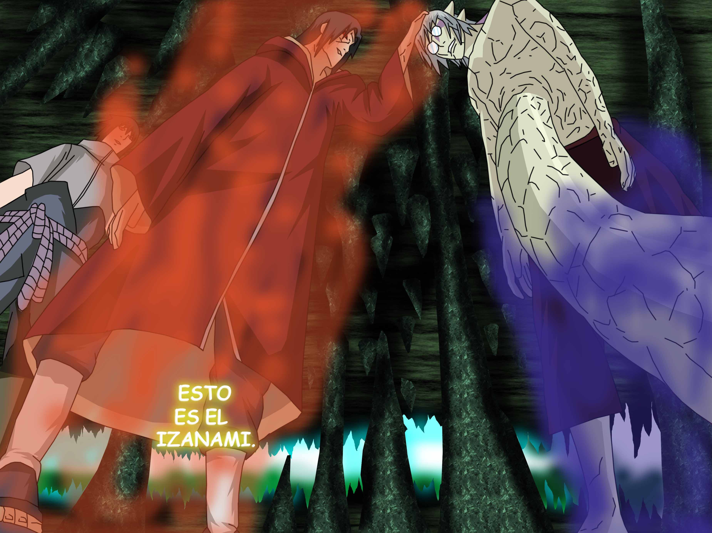

Aviso: estos momentos son los mejores en mi opinión. Es posible que tengais opiniones distintas.
Estos momentos no estan en ningun orden estan puestos aleatoriamente.
Para mi este es un momento muy impactante ya que vemos a orochimaru, el que había sido el villano principal de Naruto ser humillado en un instante por Itachi.
Naruto Shippuden capítulo 114
enlaceEste sinceramente es uno de los momentos más humillantes de Naruto, lo que sucede es que Kurenai intenta hacerle un genjutsu a nuestro dios Itachi. Y Itachi sin mover un dedo le devuelve el genjutsu y da paso a una de las mallores humillaciones que he visto.
Naruto Clásico Capítulo 81
enlaceDe nuevo Orochimaru se enfrenta a Itachi y si por la anterior no había sido suficiente Itachi vuelve a humillarlo encerrandolo en un genjutsu infinito, utilizando la espada Totsuka.
Naruto Shippuden 138
enlaceEste puesto tampoco es muy diferente a los anteriores, en este fragmento se nos muestra como Akatsuki iba a reclutar a Deidara, pero Deidara se niega, entonces Itachi dice que se enfrentara a Deidara y que si gana se unira a Akatsuki, y Deidara acepta. Solo puedo decir que Deidara casi se explota a si mismo, el resto lo teneis en el video.
Naruto Shippuden Episodio 124
enlaceEsta no es una pelea como tal, dado que no iban con la intención de matarse pero creo que es bastante interesante entre estos dos compañeros.
Este es un muy buen combate, Itachi que ya no se encuentra enfermo muestra un excelente taijutsu contra Naruto modo Kurama, además de mostrar tecnicas impresionantes. También se ve un momento expectacular cuando consigue escapar del control de Kabuto.
Naruto Shippuden capítulos 298, 299
enlaceMientras peleaba contra Kabuto junto a su hermano Sasuke, Itachi realiza un jutsu que no había sido revelado hasta el momento el Izanami, con este jutsu dejo a Kabuto encerrado en un bucle con el que podía controlar su destino.
Naruto Shippuden Capítulo 337
enlace